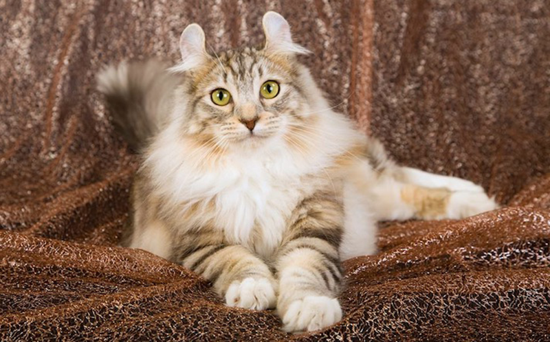
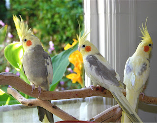
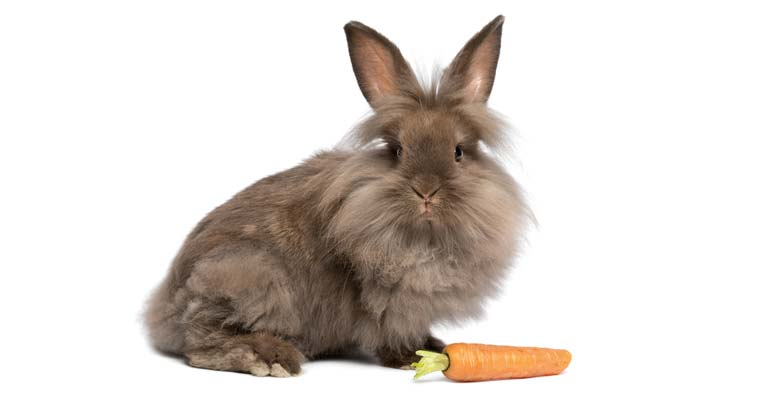
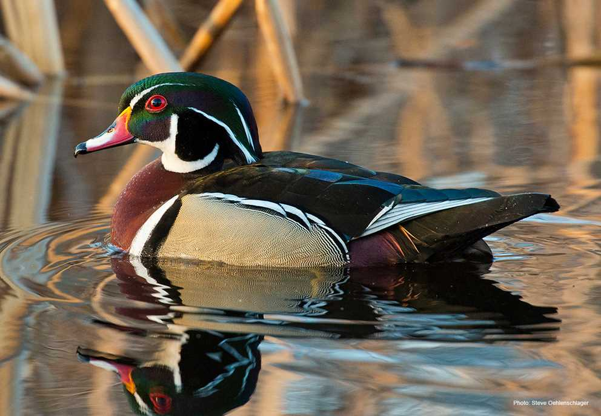

The German Shepherd is a bold dog breed that is loyal, clever, and curious. They are among the best guard dogs worldwide because they are ready to risk their lives to protect their family.
₹8000

American Curl
The American Curl is a unique cat breed known for its distinctively curled-back ears and friendly, playful nature. With a silky coat that can be either long or short, they are affectionate, adaptable companions.
₹6000

Cockatiel's
Their origin is Australia. They are also difficult to breed as African Love Birds but they are little bit easier to breed than african love birds. They are really Noisy.
₹1000

Lionhead Rabbit
Lionheads are a small, compact rabbit that is instantly recognizable by the longer mane of fur around its head, giving it the resembling appearance of a Lion’s mane. They are available in a wide variety of colors, and with a single or double mane.
₹1200

Wood Duck
Wood ducks breed across most of the central and eastern United States, southeastern Canada and along the Pacific coast from California to British Columbia. The highest breeding densities occur in the Mississippi Alluvial Valley.